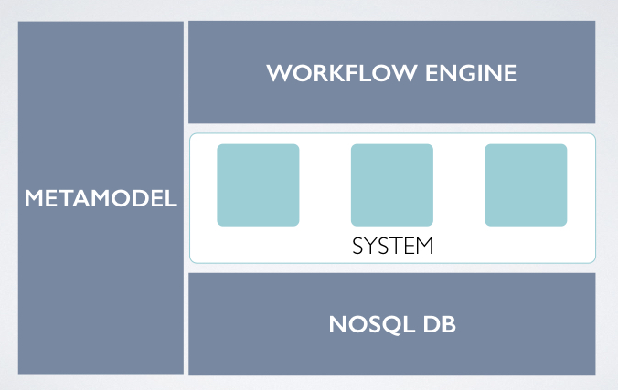

System Runtime architecture
What contains System Runtime ?

A metamodel
System Runtime contains a metamodel to help you to design your model. The definition of the model is made on a JSON format called MSON, no code is needed.
With MSON you can define types, classes, one to one / one to many relationships and multi inheritance between classes.
MSON is based on UML, so learning it is very easy.
A component factory
System Runtime uses the Model-Driven Architecture approach to create classes based on your design. Use them to instantiate your components.
A NoSQL Database
System Runtime acts as an ODM (Object-Document Mapper) to manage your components as NoSQL Documents.
System Runtime has a micro NoSQL Database that stores your components and you can export/import them into another System Runtime NoSQL Database.
Thanks to System Runtime NoSQL Database, you can compose your model with an another one.
A workflow engine
System Runtime checks at runtime if the signatures of invoked methods are compliant with your model.
With System Runtime your components really behave the way you designed them.
Concepts behind System Runtime
System Runtime is based on the concept of system:
"A system is a set of interacting or interdependent components forming an integrated whole. A system has structure, it contains parts (or components) that are directly or indirectly related to each other; A system has behavior, it exhibits processes that fulfill its function or purpose; A system has interconnectivity: the parts and processes are connected by structural and/or behavioral relationships. A system's structure and behavior may be decomposed via subsystems and sub-processes to elementary parts and process steps."
In System Runtime :
- a system is a set of models, components and behaviors,
- a component is an immutable statefull class or object,
- a structure is defined by a schema,
- a behavior is the actions that a component does when its state change,
- interconnectivity is the relationships between components defined by the model and
- every systems can be decomposed on subsystems.
Design First project
System Runtime is part of the Design First project. Design First is a set of tools to help developers to design before coding.